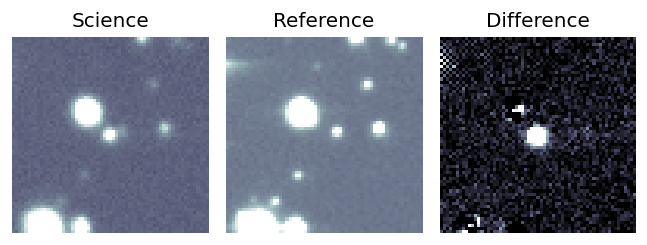
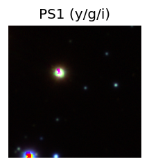
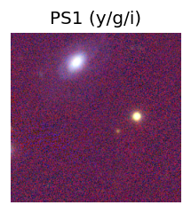
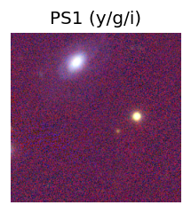

Candidate List 20260111Previous Day Next Day
Section 1: New Sources (age<1d) Section 2: Old (1-5d) sources observed last nightplaceholder
Section 1: New Afterglow/FBOT Cands Last Night (1)
1. ZTF26aaajmxk (FBOT?) [Back to Top] [Share] [Trigger Swift] [Fritz] [Lasair]RA, Dec: 101.85781, 12.59079 6h47m25.87s, 12d35m26.84sGalactic (l, b): 201.24849, 4.83083 ext(g-r) = 0.342
TESS: Sectors [ 6 33 45 71 72 87 111]
PS1: 1 source in 3 arcsec Closest: d = 4.53 arcsec photoz=0.44+/-0.17 peak abs mag = -26.26
LegacySurvey: 0 sources in 3 arcsec

Extinction-corrected gr color:
From alerts: -1.81 +/- 0.14 mag
Rise Rate:
g: 1.66 mag/day
r: 0.77 mag/day
i: -99 mag/day
Fade Rate:
g: -99 mag/day
r: -99 mag/day
i: -99 mag/day
Section 2: Older Sources Observed Last Night (4)
0. ZTF26aaaaary (FBOT?) [Back to Top] [Share] [Trigger Swift] [Fritz] [Lasair]RA, Dec: 0.7172, 13.09497 0h 2m52.13s, 13d 5m41.89sGalactic (l, b): 105.07255, -48.08542 ext(g-r) = 0.089


TESS: Sectors [42 43 83]
SDSS (10 arcsec):Found SDSS phot-z: z=0.03; peak abs mag = -19.78
PS1: 0 sources in 3 arcsec
LegacySurvey: 1 sources in 3 arcsec Closest: d = 5.17 arcsec, 8.0 deg (east of north) photoz=0.03 (68% bounds 0.02, 0.03), type=SER peak abs mag = -19.43 (68% bounds -19.01, -19.84)

Extinction-corrected gr color:
From alerts: -0.07 +/- 0.01 mag
Rise Rate:
g: 0.24 mag/day
r: 0.23 mag/day
i: -99 mag/day
Fade Rate:
g: -99 mag/day
r: -99 mag/day
i: -99 mag/day
1. ZTF26aaacskq (Afterglow?) [Back to Top] [Share] [Trigger Swift] [Fritz] [Lasair]RA, Dec: 155.87203, 54.00093 10h23m29.29s, 54d 0m3.34sGalactic (l, b): 157.88345, 51.88248 ext(g-r) = 0.011


TESS: Sectors [48 75]
SDSS (10 arcsec):Found SDSS phot-z: z=0.42; peak abs mag = -23.27
PS1: 0 sources in 3 arcsec
LegacySurvey: 1 sources in 3 arcsec Closest: d = 6.95 arcsec, 89.2 deg (east of north) photoz=0.26 (68% bounds 0.16, 0.57), type=REX peak abs mag = -22.03 (68% bounds -20.89, -24.03)

Extinction-corrected gr color:
From alerts: 0.82 +/- 99 mag
Rise Rate:
g: 0.15 mag/day
r: 0.13 mag/day
i: -99 mag/day
Fade Rate:
g: 17.1 mag/day
r: -99 mag/day
i: -99 mag/day
2. ZTF26aaacwjf (Afterglow?FBOT?) [Back to Top] [Share] [Trigger Swift] [Fritz] [Lasair]RA, Dec: 173.74723, 63.66547 11h34m59.33s, 63d39m55.70sGalactic (l, b): 136.39983, 51.41723 ext(g-r) = 0.025


TESS: Sectors [14 15 21 41 48 75]
SDSS (10 arcsec):Found SDSS phot-z: z=0.84; peak abs mag = -25.55
PS1: 0 sources in 3 arcsec
LegacySurvey: 1 sources in 3 arcsec Closest: d = 1.31 arcsec, 108.4 deg (east of north) photoz=0.07 (68% bounds 0.03, 0.12), type=REX peak abs mag = -19.5 (68% bounds -17.38, -20.6)

Extinction-corrected gr color:
From alerts: -0.32 +/- 0.08 mag
Rise Rate:
g: 0.08 mag/day
r: 40.6 mag/day
i: -99 mag/day
Fade Rate:
g: -99 mag/day
r: 1.61 mag/day
i: -99 mag/day
3. ZTF26aaadirb (Afterglow?) [Back to Top] [Share] [Trigger Swift] [Fritz] [Lasair]RA, Dec: 193.17204, 28.95426 12h52m41.29s, 28d57m15.34sGalactic (l, b): 114.4139, 88.15327 ext(g-r) = 0.015 

TESS: Sectors [23 49]
PS1: 0 sources in 3 arcsec
LegacySurvey: 1 sources in 3 arcsec Closest: d = 3.99 arcsec, 313.3 deg (east of north) photoz=0.91 (68% bounds 0.61, 1.2), type=PSF peak abs mag = -25.82 (68% bounds -24.75, -26.56)

Extinction-corrected gr color:
From alerts: -0.07 +/- 0.1 mag
Consistent with synchrotron, g-r>0!
Rise Rate:
g: -99 mag/day
r: 1.3 mag/day
i: -99 mag/day
Fade Rate:
g: -99 mag/day
r: -99 mag/day
i: -99 mag/day